The draw of motorsport photography is that it catches brilliant moments and tense scenes at high speed. This needs strong skill, but also fast reactions and a sharp eye. F1 cars are extremely fast. Every split second can decide the result, which makes motorsport photography very hard and very challenging.
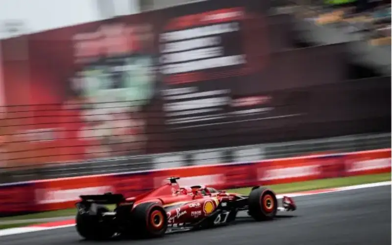
©Chen Di Shot with the EOS R3
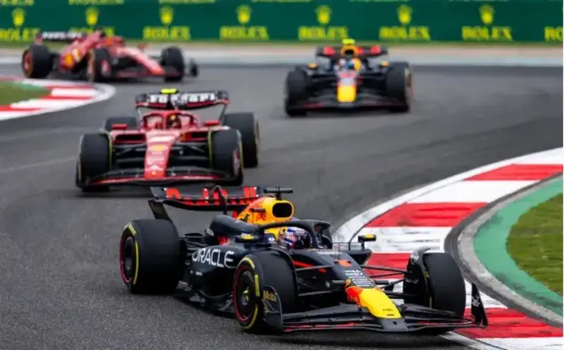
©Ke Yigong Shot with the EOS R3
To understand these challenges and how the photographers meet them, we spoke with several who shot this year’s F1 event in Shanghai. They told us about their experience and lessons at the race. How do they use Canon gear in this high-speed setting, beat the challenges, and catch the moments people remember? Let us hear their stories.
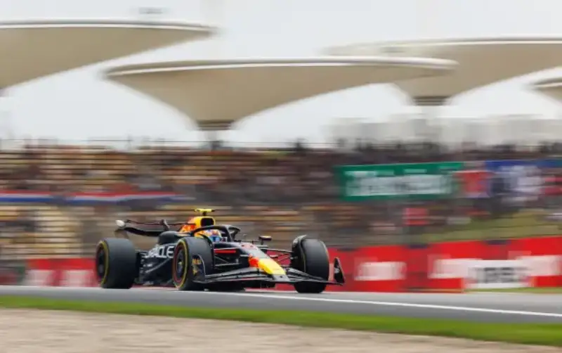
©Wang Xin Shot with the EOS R3
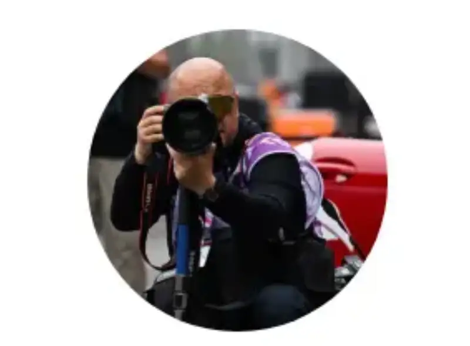
Chen Di
Born in the 1980s. He now works as senior manager of visual content at a professional sports event company in Shanghai. He leads image work for major events. He started in advertising planning and production, then became a pro photographer in 2009. He has shot about 300 sports events and taken about 2.6 million photos.
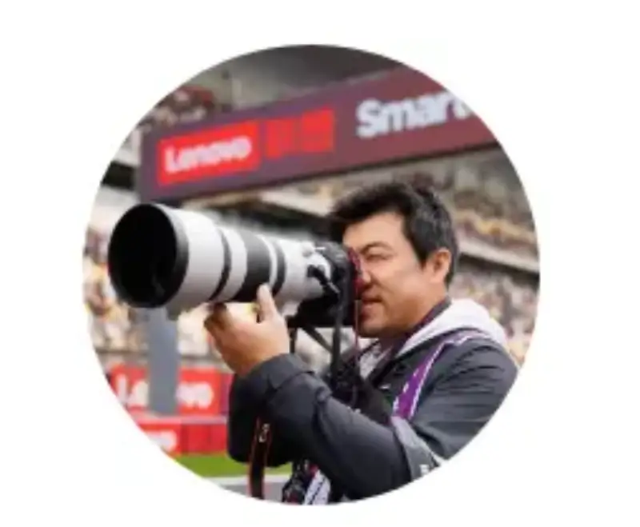
Ke Yigong
He once worked in media and advertising. He edited magazines and served car companies. Now he is a sports photographer who focuses on racing, with more than ten years of experience.
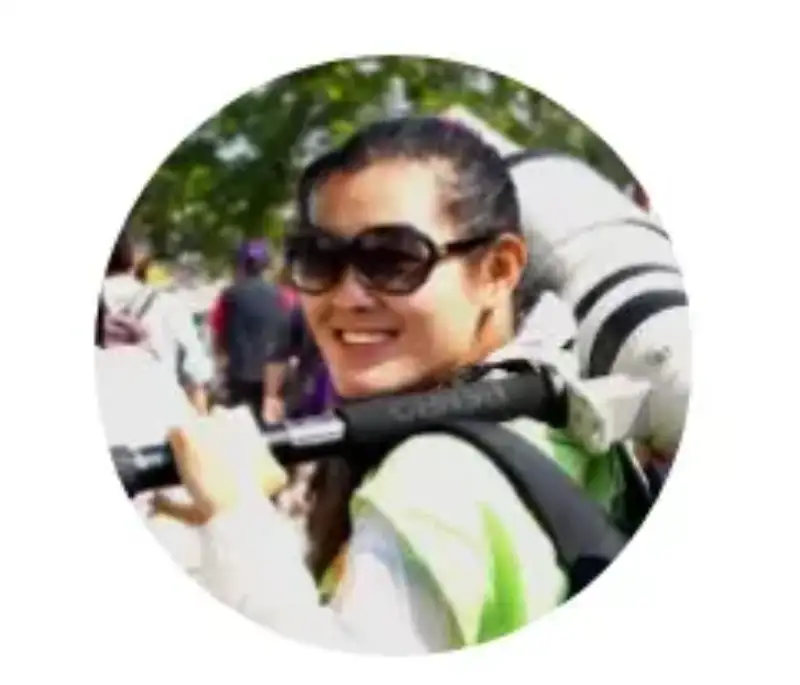
Fan Yuqin
Since 2012 she has worked to promote motorsport photography. In 2017 she came to the F1 track by chance. After three seasons, she earned her FIA F1 annual photo pass in 2020.
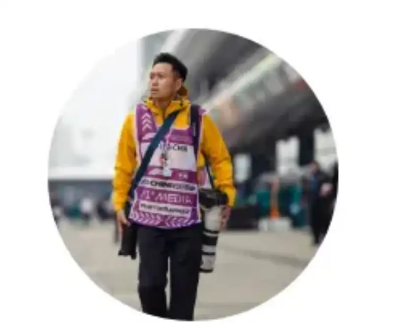
Wang Xin
He started to learn photography in 2004. He first became interested after seeing pro photographers at a race track. He then worked for years as a photographer at car magazines. In 2018 he went independent and focused on commercial car and racing advertising.
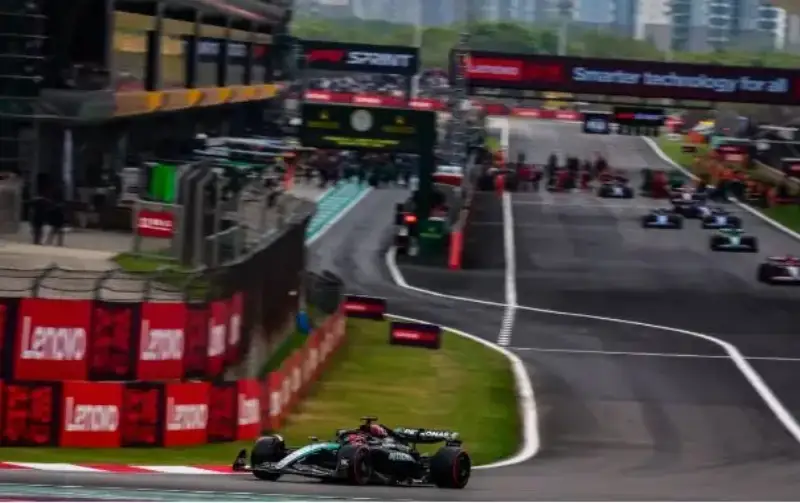
©Fan Yuqin Shot with the EOS R3
Q: When did you start to use Canon cameras? What traits of Canon cameras do you value most?
Chen Di: I started to use Canon cameras in early 2010. The button layout and control logic fit high-intensity, fast-changing sports shooting.
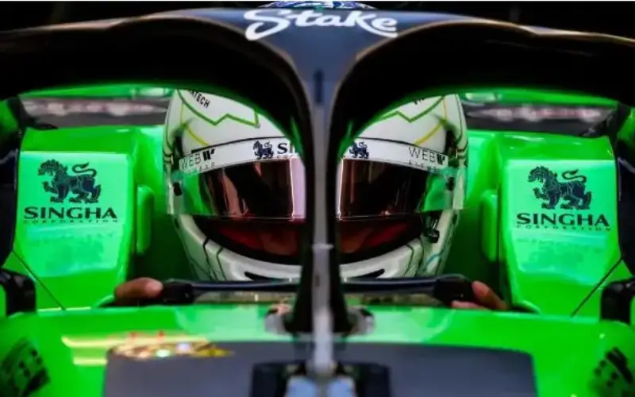
©Chen Di Shot with the EOS R3
Ke Yigong: I used Canon film cameras as a student. My first digital camera was the EOS 350D. I value the strong performance, the reliable bodies and lenses, and the sound control logic.
Fan Yuqin: My first digital camera was a Canon. When I later chose a DSLR, I naturally chose Canon again. The steady output and the strong super-telephoto prime lenses are the main reasons.
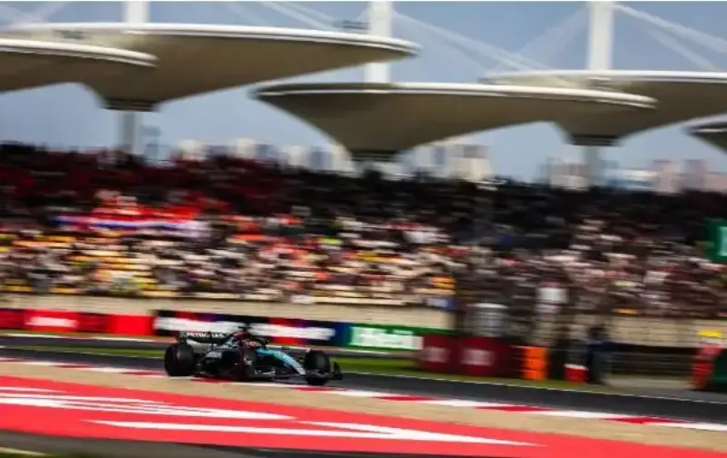
©Fan Yuqin Shot with the EOS R3
Wang Xin: I started by borrowing a classmate’s Canon in college. Canon cameras have run through my career of nearly 20 years now. Stable, reliable performance is my strong impression of Canon.
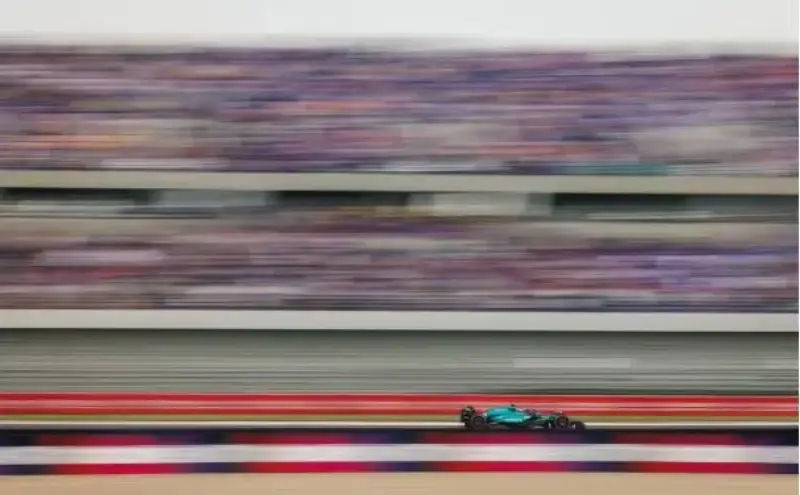
©Wang Xin Shot with the EOS R3
How did you make sports event photography your career? What is the special draw of this work?
Chen Di: I began to shoot sports events because of work. Sports photography asks a lot of a photographer. When I get the shot I wanted, the sense of reward is huge. That is its special draw.
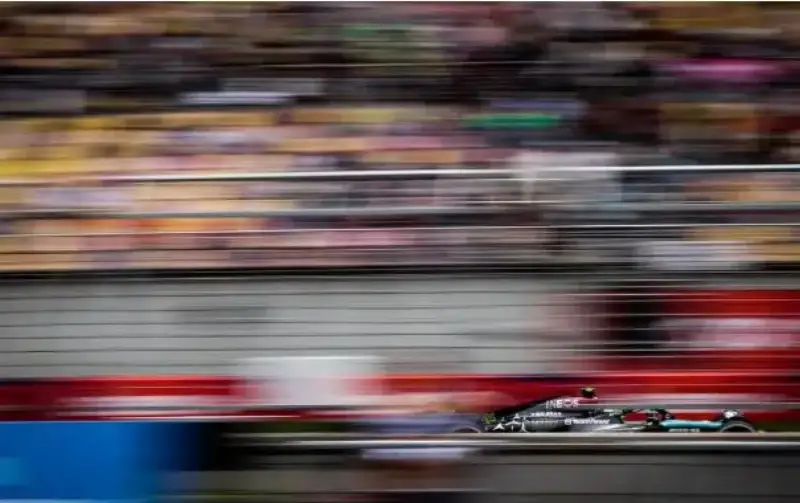
©Chen Di Shot with the EOS R3
Ke Yigong: I loved sports and photography from childhood. After graduation I joined the most professional media outlet in the country. To turn a love into my work is one of life’s great joys.
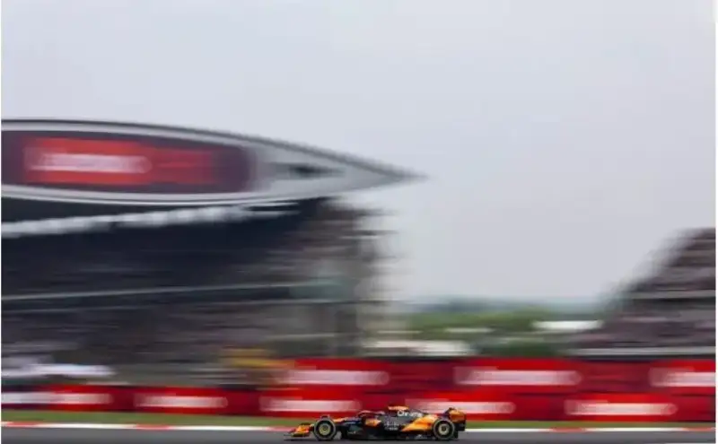
©Ke Yigong Shot with the EOS R3
Fan Yuqin: I first entered the field out of a love for motorsport photography. In 2012, at the Canon Expo in Beijing, I met Yu Ming, the first Chinese photographer with an F1 annual pass. After that I began my pro path. To turn a hobby into a job takes persistence, and that is the special draw.
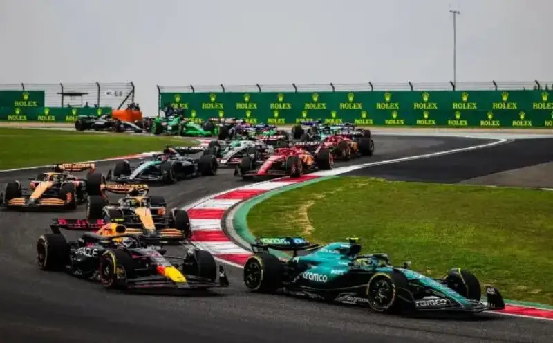
©Fan Yuqin Shot with the EOS R3
Wang Xin: Influenced by the pros on the track, becoming a pro photographer was always my goal. The draw is that I can use my own eye and taste, and share a frame with more people through my gear.
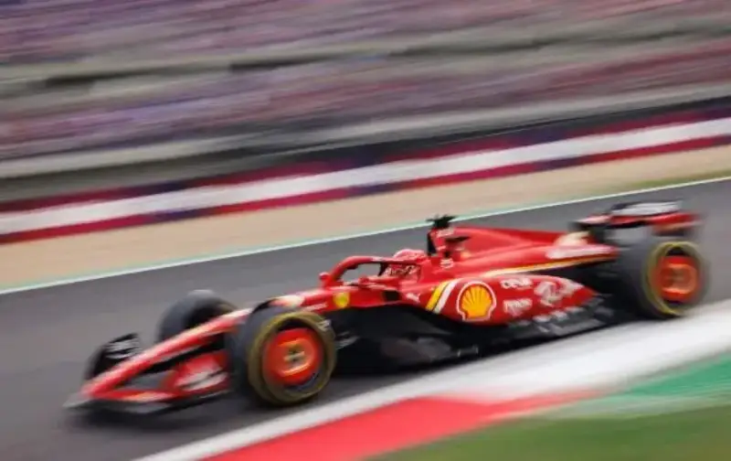
©Wang Xin Shot with the EOS R3
Which camera body did you use during the shoot? How is the focus performance? Does it meet your needs?
Chen Di: I mainly use the EOS R3 now. Its upgraded EOS iTR AF X (intelligent tracking and recognition) system helps a lot with racing. You can even select vehicle as the detection target, which makes shooting easier.
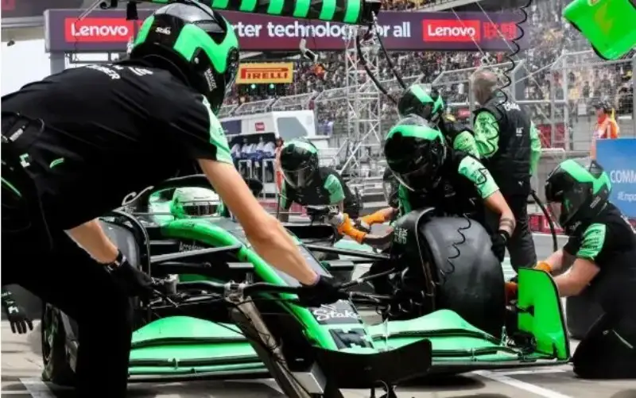
©Chen Di Shot with the EOS R3
Ke Yigong: I often use the EOS R3 and EOS R5. The focus is excellent, and I can fully trust the camera.
Fan Yuqin: I often use the EOS R3 and EOS R5. The focus is superb, especially vehicle recognition and the pan-focus assist.
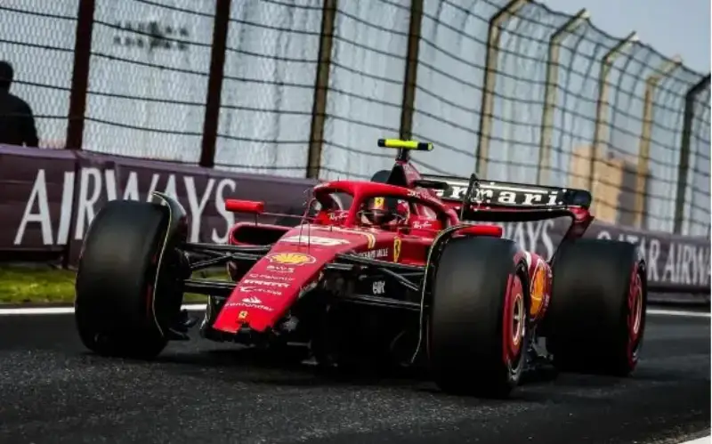
©Fan Yuqin Shot with the EOS R3
Wang Xin: I used the EOS R3 for this event. The focus, burst, and stabilization all improved a lot. It never limited what I wanted to shoot.
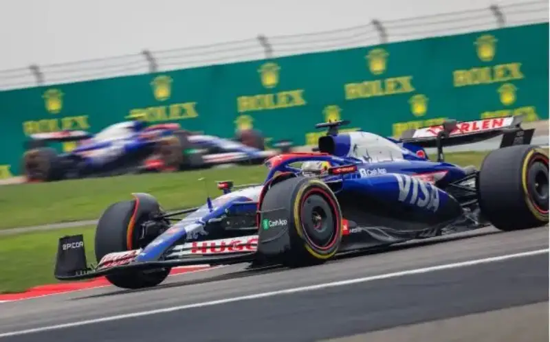
©Wang Xin Shot with the EOS R3
How is the burst rate and image quality?
Chen Di: The EOS R3 shoots at 30 frames per second. Its back-illuminated stacked CMOS has 24.1 effective megapixels, and the image quality is great.
Ke Yigong: Whether I use the mechanical or electronic shutter, I never miss the decisive moment.
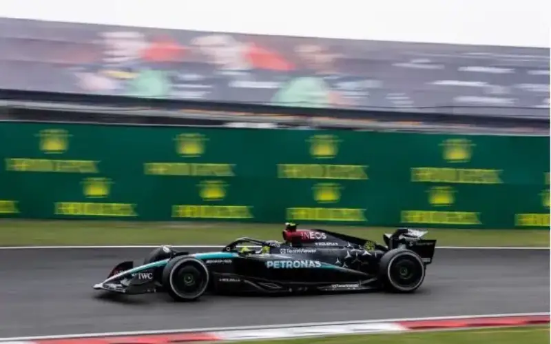
©Ke Yigong Shot with the EOS R3
Fan Yuqin: The burst and image quality are excellent. I never miss a moment.
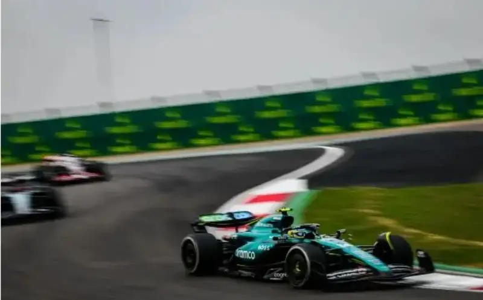
©Fan Yuqin Shot with the EOS R3
In low light, such as on an overcast day or at dusk, how is the high ISO performance? Does the image quality meet the need?
Chen Di: The high ISO of the EOS R3 is very good. When I shoot fast into backlight, the high ISO gives strong support.
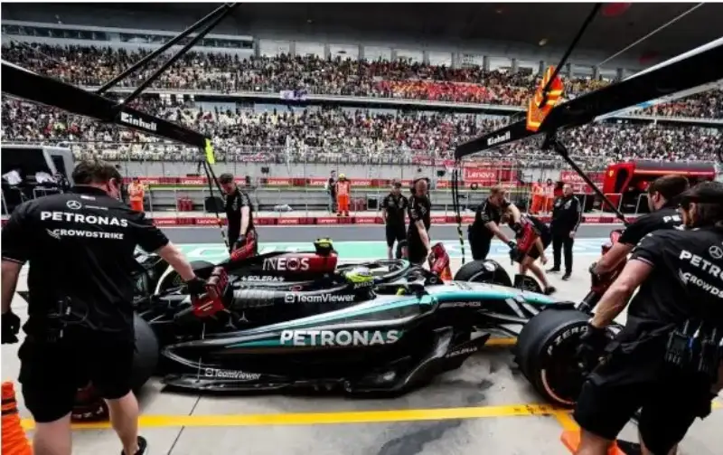
©Chen Di Shot with the EOS R3
Ke Yigong: The high ISO is as good as ever. On rainy days and in low light, it also leaves room in post-processing.
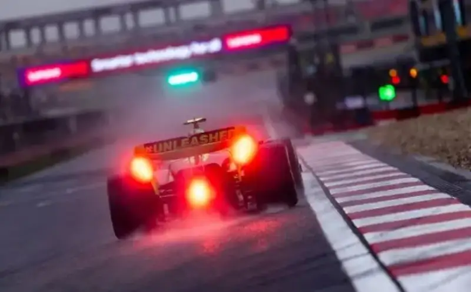
©Ke Yigong Shot with the EOS R3
Fan Yuqin: The high ISO and dynamic range are excellent. They add more ways to shoot and more room for error.
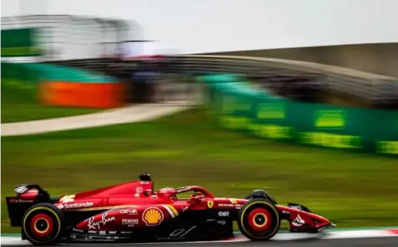
©Fan Yuqin
Wang Xin: The EOS R3 balances megapixels against high-ISO dynamic range. This matters a lot under complex, changing conditions.
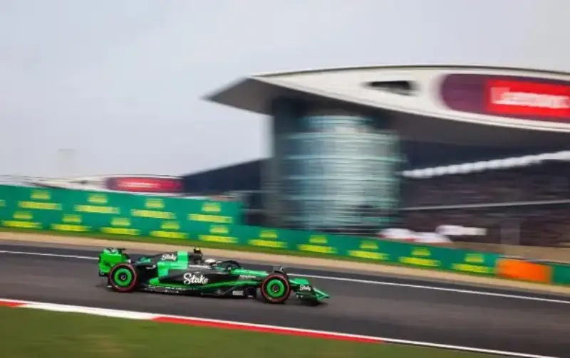
©Wang Xin Shot with the EOS R3
When you shoot racing, how do you set up your lenses?
Chen Di: For this F1 Chinese Grand Prix I used five lenses: the RF15-35mm F2.8 L IS USM, RF24-105mm F2.8 L IS USM Z, RF70-200mm F2.8 L IS USM, RF100-300mm F2.8 L IS USM, and RF400mm F2.8 L IS USM.
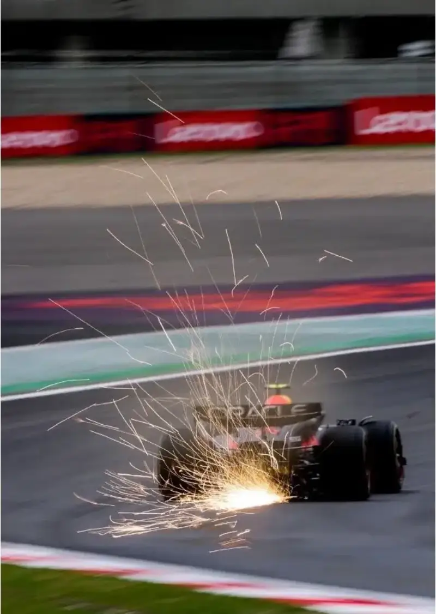
©Chen Di Shot with the EOS R3
Ke Yigong: For the track and pit lane at the Chinese Grand Prix, my main lenses were the RF10-20mm F4 L IS STM, RF28-70mm F2 L USM, and RF100-300mm F2.8 L IS USM, plus an RF 1.4x extender. For interviews in the paddock I usually use the 85mm and 35mm primes.
Fan Yuqin: I usually carry two bodies and four to six lenses, from ultra-wide to super-telephoto. I also bring one or two fast primes for portraits in the pit garage. The light Canon gear lowers the load.
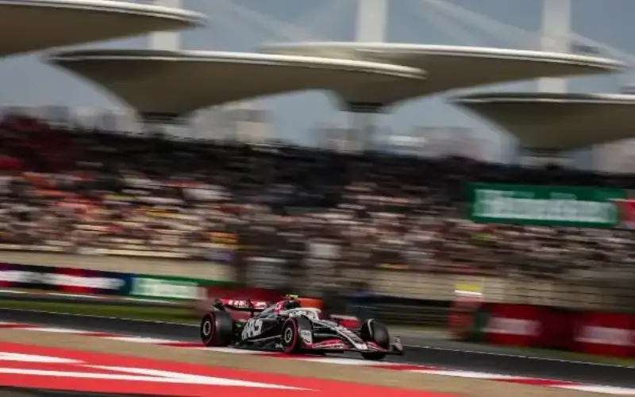
©Fan Yuqin Shot with the EOS R3
Wang Xin: My ideal setup now is the RF24-105mm F2.8 L IS USM Z with the RF100-300mm F2.8 L IS USM. Two bodies give fast coverage across the range.
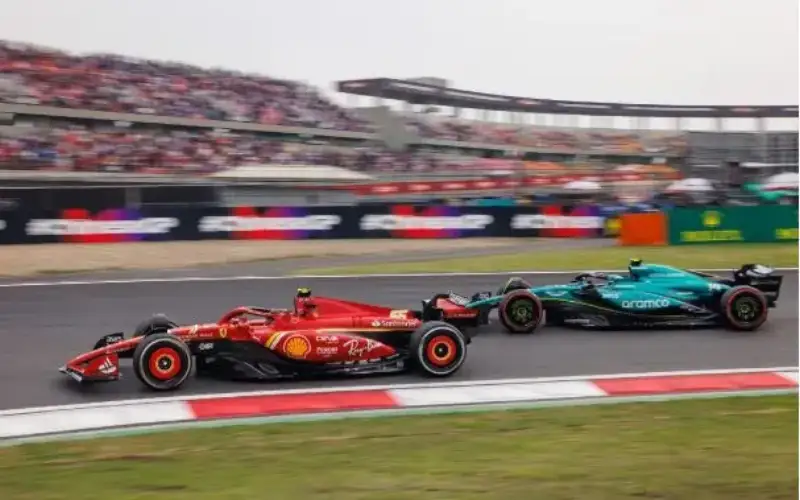
©Wang Xin Shot with the EOS R3
How is the performance of Canon telephoto lenses? What role do they play in F1 shooting?
Chen Di: The upgraded RF telephoto lenses use new materials and are lighter, so I can hand-hold them. With an extender, the reach goes to 600mm, which covers every telephoto need for racing.
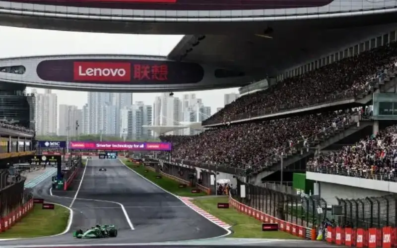
©Chen Di Shot with the EOS R3
Ke Yigong: The RF telephoto lenses are light and fit F1 well. The focus, sharpness, and color are strong. Because they are light, we can leave the tripod or monopod behind.
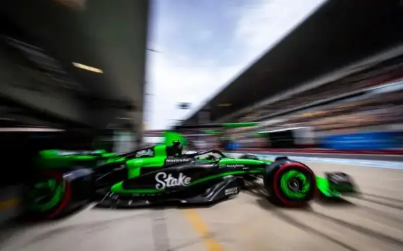
©Ke Yigong Shot with the EOS R3
Fan Yuqin: Telephoto lenses are used more than 80 percent of the time in F1. The wide, growing range of super-telephoto lenses is a key reason I choose Canon.
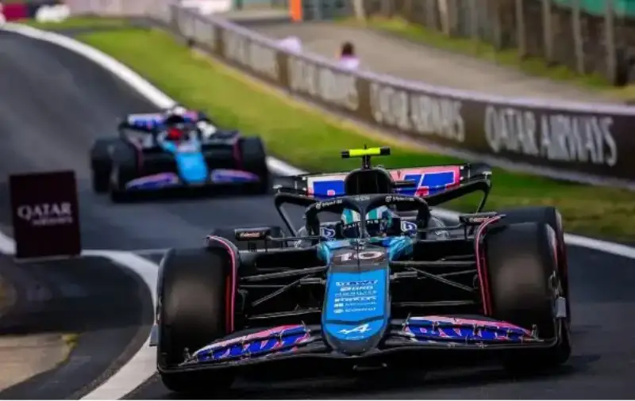
©Fan Yuqin Shot with the EOS R3
Wang Xin: For safety, photographers usually shoot from farther away. The reach and space compression of a telephoto show detail and make the frame more compelling.
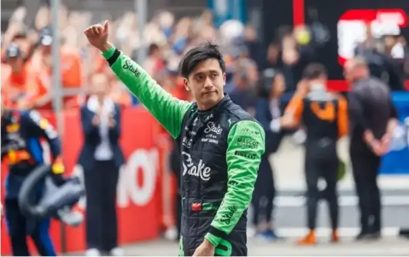
©Wang Xin Shot with the EOS R3
When you shoot something as fast as F1, what challenges usually appear? How do you beat them?
Chen Di: The speed of an F1 car asks for a fast shutter and precise focus. Panning at a slow shutter also matters. It takes long experience and a camera setup that feels like part of your hand.
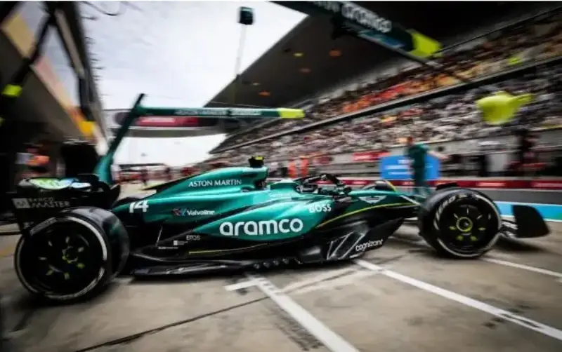
©Chen Di Shot with the EOS R3
Ke Yigong: Fleeting moments and blind shots from odd angles are easy to handle with the vari-angle screen and very fast burst.
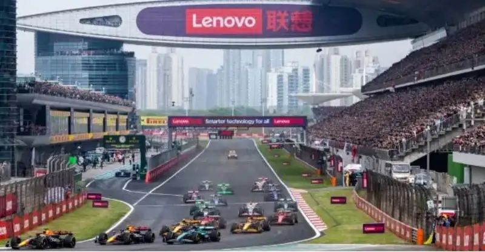
©Ke Yigong Shot with the EOS R3
Fan Yuqin: Focus is the never-ending topic in sports. Practice and anticipation raise focus accuracy, and the camera’s own focus does the rest.
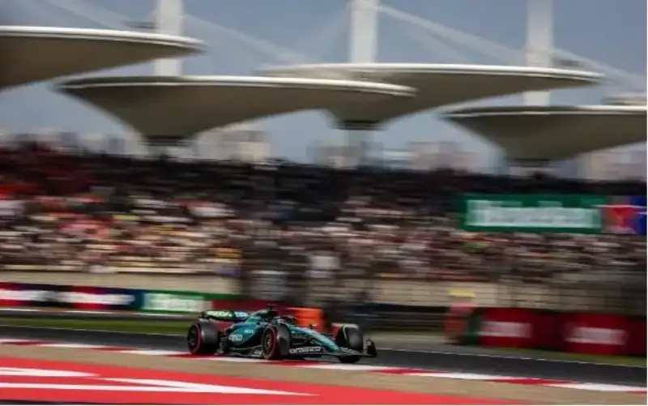
©Fan Yuqin Shot with the EOS R3
Wang Xin: It is not easy to get a shot I like every day, so I must keep improving. When I shoot the same track many times, I hit a wall. I feel I have already shot the good spots, and I do not want photos that differ from before. At that point, doing my homework, studying other photographers’ work, and trying new techniques is how I break through.
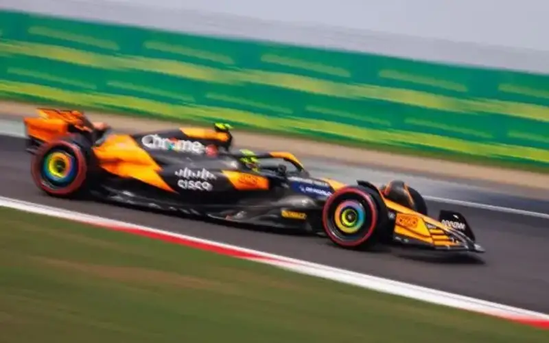
©Wang Xin Shot with the EOS R3
At this year’s F1 event, what memorable moments did you capture?
Chen Di: First, of course, the first out lap of our first Chinese race driver, Zhou Guanyu, in the first free practice at his home race. After he became an F1 driver, this was his first official run on his home track, in front of his home fans. The moment the car left the garage, he went from a young fan who dreamed of being an F1 driver to one of the twenty best drivers in the world. To become an F1 driver may be one of the hardest things on earth, and for a Chinese child it is even harder. So this moment is historic. I am glad I recorded it in full.
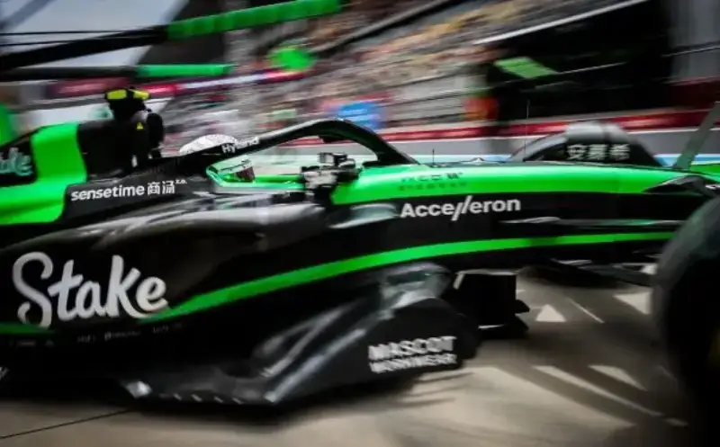
©Chen Di Shot with the EOS R3
The other was a sun halo I caught by the famous Jiading Grandstand at the Shanghai track. The F1 Chinese Grand Prix is always held around the Qingming festival. At that time the Jiangnan region alternates between rain and sun, and sun halos are common. During Sunday qualifying I happened to be shooting at Turn 13. Just beyond Turn 13 is the famous Jiading Grandstand, known for its long red-and-white Jiading JiaDing ads. Wearing sunglasses, and because of backlight diffraction, I saw a huge ring of light around the sun directly overhead. I moved at once, put on the EF8-15mm fisheye, and took this F1 photo under a rare sky.
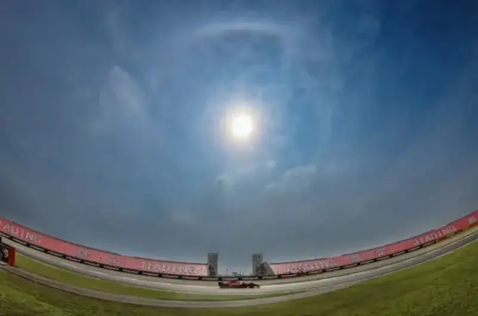
©Chen Di Shot with the EOS R3
Ke Yigong: Every time Zhou Guanyu took to the track was a moment worth remembering at this year’s Chinese Grand Prix.
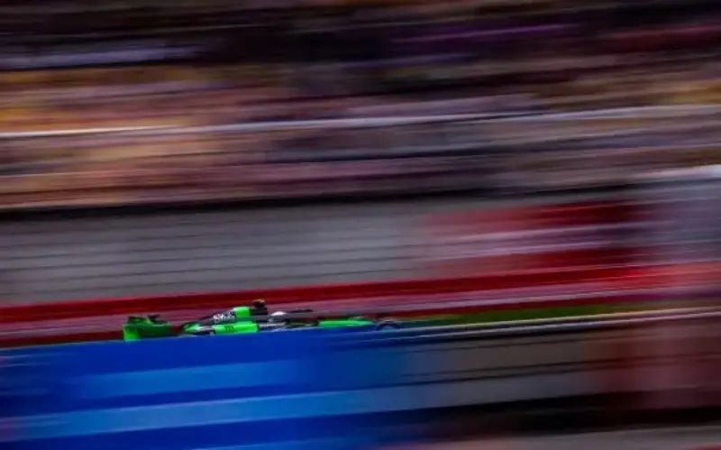
©Ke Yigong Shot with the EOS R3
Fan Yuqin: The standout moments of recent F1 seasons belong to Zhou Guanyu. This year he also raced at home for the first time, and every highlight is fresh in mind.
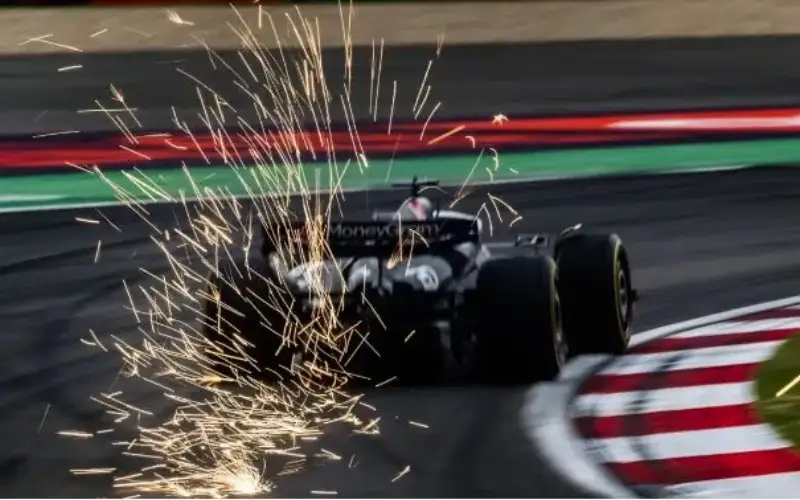
©Fan Yuqin Shot with the EOS R3
Wang Xin: F1 is a contest of speed and time. To shoot F1 you need careful timing and fast adaption. A sudden downpour can wreck your plan, and a good adjustment then matters a lot. In Friday’s sprint qualifying, a last-minute change let me catch the cars past the hairpin grandstand with sparks flying. I was very happy with that. Soon after, it poured.
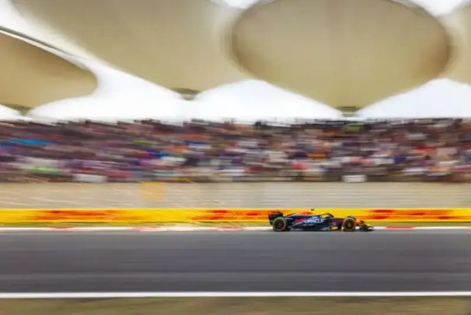
©Wang Xin Shot with the EOS R3
What advice do you have for other photographers who want to shoot F1 or similar sports?
Chen Di: First, know the event and your subject. Learn the structure and the key times, and manage your time well.
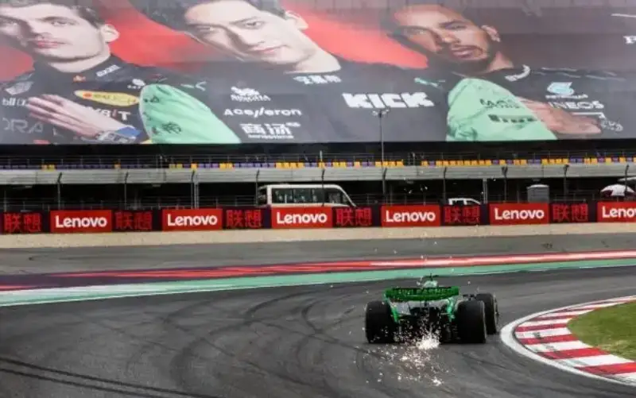
©Chen Di Shot with the EOS R3
Next, know your gear well. Racing photography needs fast reactions. You must follow a fast-moving subject and change settings as the light shifts, for example a sudden move from front light to back light. This takes a lot of practice.
Last, keep shooting. The events themselves improve each year, and your understanding of the rules and the cars must keep up. Only by shooting on do you capture the heart of the sport.
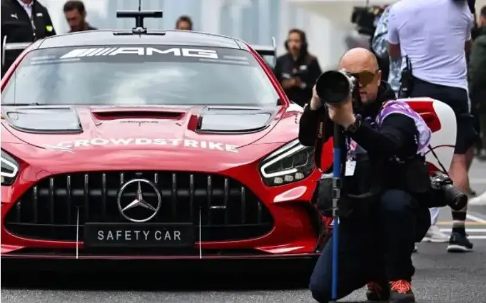
Ke Yigong: The technique is not the hardest part. Knowing your subject, the event, and the sport itself, and preparing well, matter most. That means timing, choosing what to shoot, and picking lenses and methods.
Fan Yuqin: I suggest starting with basic events. First learn the shooting skills and the rules, and enjoy the work. Sports photography also asks a lot of your body, so stay fit for each challenge.
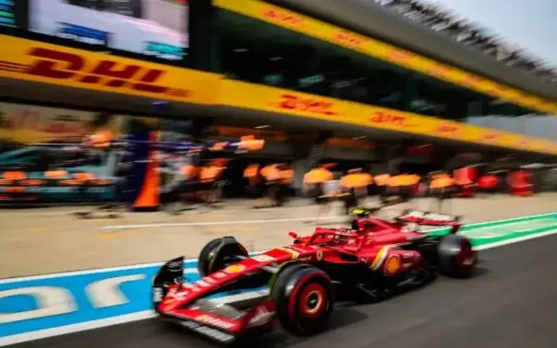
©Fan Yuqin Shot with the EOS R3
Wang Xin: Do your homework before an event. On site, try different things, and learn from more senior photographers. Experience matters a lot.
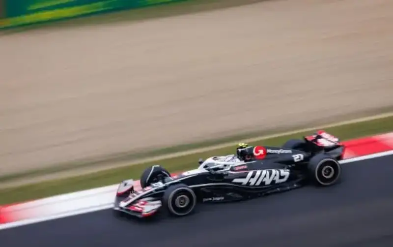
©Wang Xin Shot with the EOS R3
Q: What do you see as Canon’s strengths in sports photography? Will you keep choosing Canon?
Chen Di: Canon’s strengths in sports are a range of bodies for every need, a full set of lenses for sports, and CPS on site for gear loans and support, which is fast and easy. Canon will stay my first choice for work and life.
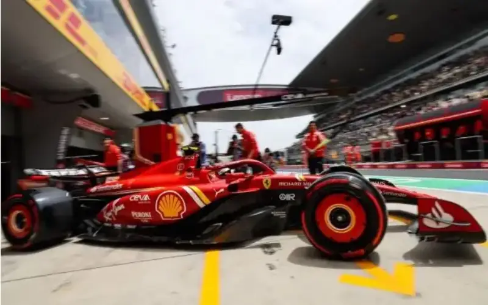
©Chen Di Shot with the EOS R3
Ke Yigong: The R-series bodies are lighter, with stronger focus and better lenses, and that is the biggest edge in sports. I will keep using Canon, of course, because the moment lasts.
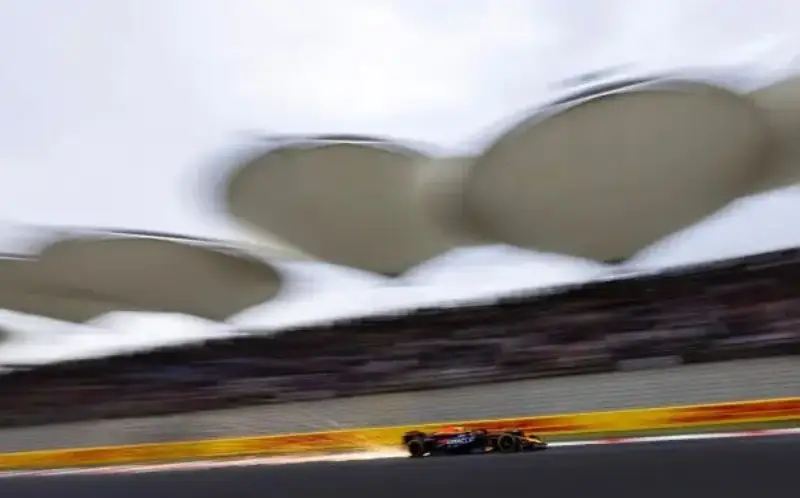
©Ke Yigong Shot with the EOS R3
Fan Yuqin: Focus, lens quality, and steady performance are Canon’s strengths. Like many photographers, I will keep following Canon’s new cameras and enjoy what good gear can do.
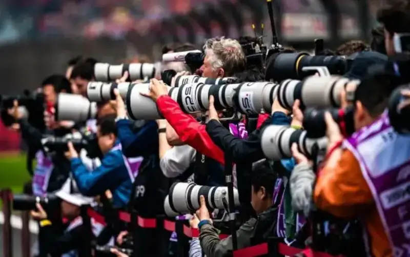
©Fan Yuqin Shot with the EOS R3
Wang Xin: For a pro, gear must be stable and reliable in a complex, changing setting. On top of that, strong performance and a wide lens choice are Canon’s strengths in sports. Canon has always been my first choice.
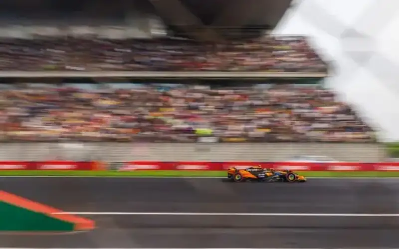
©Wang Xin Shot with the EOS R3
The Canon EOS R3 won high praise from these top photographers for its focus, fast burst, and high ISO. Its stability and reliability at the complex, changing F1 track let them calmly catch every fleeting moment.
In future, whether for fast racing or other sports, the Canon EOS R3 will keep being a trusted tool, and help photographers make more powerful images.